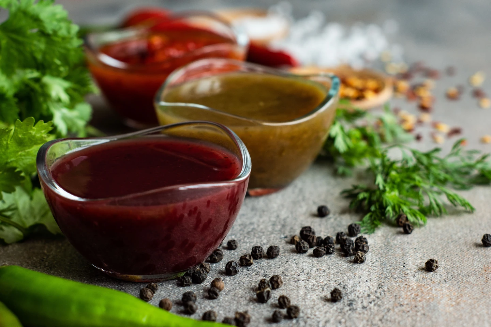

Tkemali Sauce

Pikante georgische Pflaumensauce Tkemali
- 500 Gramm Kirschpflaumen (halbiert & entsteint)
- 25 Gramm Rohrzucker
- 1 Prise Salz
- 50 Milliliter Himbeeressig
- 1 Zitrone (Saft)
- 2 Esslöffel Minze (geschnitten)
- 3 Esslöffel Koriander (geschnitten)
- 1 Prise Pfeffer (rot)
- 3 Knoblauchzehen
- 1 kleine Chili (kernlos)
- 2 Teelöffel Paprikapulver (scharf)
Zubereitung:
- Zunächst die Pflaumen halbieren und entsteinen.
- Alle Zutaten bis auf den Zitronensaft und die Kräuter in einem Topf erhitzen und zum Kochen
bringen. Dabei ab und an umrühren, damit sich der Zucker zügig auflöst.
- Die Hitze reduzieren und etwa 25 bis 30 Minuten köcheln lassen, bis
die Masse die Konsistenz eines Chutneys hat.
- Den Saft aus einer
Zitrone hinzufügen und zum Schluss die frisch gehackten Kräuter
unterheben.
- Die Pflaumensauce am besten in ein steriles Glas geben und
kaltstellen.
- Sie hält sich so etwa einen Monat lang und du kannst sie zum
Verfeinern deiner Gerichte oder als Sauce verwenden.
- Es gibt eine grüne
und eine rote Tkemali-Sauce